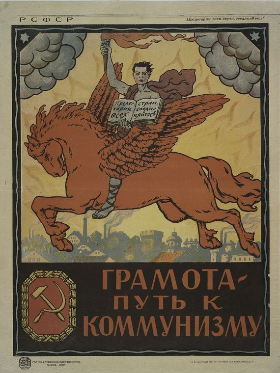
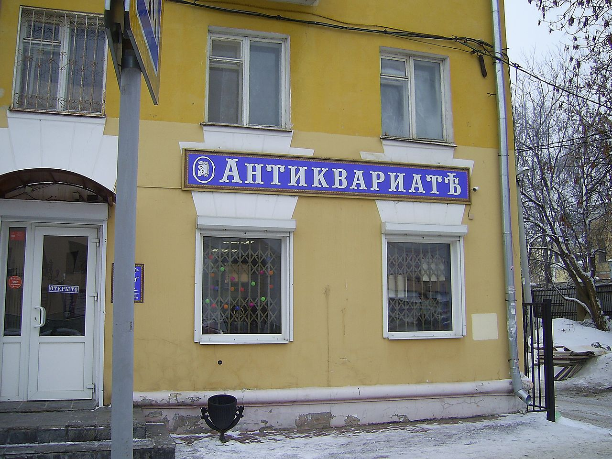

Introduction
While the Russian language has existed in some recognizable form since the 1400s, modern Russian truly began to take shape around the turn of the 18th century. Since then, various standardization reforms and attempts have molded the language and alphabet into what we know today.
If you were to travel back in time about 110 years ago to Moscow (or more realistically, look at a book or a photo of a storefront from this time), you would mostly recognize the orthagraphy of the Russian language — with four execptions. These execptions are:
- І
- Ѵ
- Ѳ
- Ѣ
The Russian Revolution of 1917 resulted in signifant changes to the country's politics, economy, society and culture. One such change was the elimination of the letters listed above.
Why were these letters deleted from the Russian alphabet? The short answer is simplification — these letters generally represented redundant or rarely used sounds, and tended to overcomplicate the language learning process. To fulfill the Bolsheviks' goal of increasing literacy across the country (as well as severing ties to the former government and what it represented), they set out to reform the language, and in doing so removed the letters above.
While these letters may not look like anything to you yet, we will look at each one more closely (and the rest of the Russian alphabet more generally) to find out why they were eliminated.
The Modern Russian Alphabet
Without any context as to what the current modern Russian alphabet looks like, our extinct letters above may not appear any different than the ones in use every day today. Let's take a quick look at the modern Russian alphabet and how the letters are pronounced.
| Capital Letter | Lowercase Letter | Sound Approximation | English Equivilent |
|---|---|---|---|
| А | а | "a" | water |
| Б | б | "b" | bakery |
| В | в | "v" | venom |
| Г | г | "g" | go |
| Д | д | "d" | dog |
| Е | е | "ye" | yes |
| Ё | ё | "yo" | your |
| Ж | ж | "zh" | vision |
| З | з | "z" | zone |
| И | и | "ee" | leech |
| Й | й | "y" | toy |
| К | к | "k" | cart |
| Л | л | "l" | leave |
| М | м | "m" | Mars |
| Н | н | "n" | on |
| О | о | "o" | auto |
| П | п | "p" | paper |
| Р | р | "r" (rolled) | real |
| С | с | "s" | signal |
| Т | т | "t" | tank |
| У | у | "u" | cool |
| Ф | ф | "f" | fast |
| Х | х | "kh" | similar to Spanish's "j" in "japaleño" |
| Ц | ц | "ts" | bits |
| Ч | ч | "ch" | check |
| Ш | ш | "sh" | shrimp |
| Щ | щ | "sch" | close to sh in sheep |
| Ъ | ъ | hard sign | hardens consonant preceding |
| Ы | ы | "i" or "y" | sit |
| Ь | ь | soft sign | softens consonant preceding |
| Э | э | "e" | elegant |
| Ю | ю | "yu" | use |
| Я | я | "ya" | yard |
The Russian alphabet is a variant of the Cyrillic script, a writing system commonly used in East Europe and Central Asia and named after the 9th Century saint, St. Cyril. You can see some familiar letters, some unfamiliar letters, and some letters that look familiar but are pronounced completely differently in Russian than in English.
For the last hundred years, this has been the Russian alphabet. We'll now look at the above-listed Russian letters, one at a time, to examine their origins, pronunciation, reasons for removal and legacy.
І, і — The Dotted I
The dotted I should look very familiar to English speakers, and in fact is pronounced the same as the English I in some cases. Pre-reform Russian's dotted I represented the sound "ee", much like the vowel you hear in the words "machine" and stream.
If you paid attention to the alphabet chart above, you'd have noticed that the letter "И" also represents this same sound. The Bolsheviks considered two letters making identical sounds to be redundant, so they elected to remove the dotted I from Russian orthography and replace it with "И" in all cases. Let's look at some examples:
| Pre-Reform Russian | Modern Russian | Transliteration | Translation |
|---|---|---|---|
| Россія | Россия | Rossiya | Russia |
| англійскій | английский | angliyskiy | english |
| міръ | мир | mir | world |
The last example is of particular note: міръ means "world" or "universe", and миръ means "peace". These words are homophones, so they are pronounced exactly the same; however before the reforms of 1918, they had different, unique spelling. As a result of the reforms, they are now both spelled мир.
While the dotted I is no longer in use in Russian, it can still be seen in modern Ukrainian and Belarusian — two languages closely related to Russian.
Ѵ, ѵ — Izhitsa
Izhitsa may look familiar, similar to the english "V". But it in fact also represented the sound "ee", just like the dotted I and "И". However, unlike the dotted I, which (though uncommon) was in general use at the time, Izhitsa was only used in a handful of cases.
| Pre-Reform Russian | Modern Russian | Transliteration | Translation |
|---|---|---|---|
| мѵро | миро | miro | chrism |
As you can see, examples are rather lacking. With little fanfare, Izhitsa was quietly eliminated from the Russian language. It still exists in Old Church Slavonic, an ancient liturgical language similar to Latin.
Ѳ, ѳ — Fita
Fita represented the sound "f", just like the letter Ф that still exists in modern Russian. Fita comes from the Greek letter Theta, but since the "th" sound does not exist in Russian, Russians pronunced it identically to "f". Since the "th" sound doesn't occur naturally in Russian, Fita was typically used in a handful of loanwords from Greek, as well as Greek-origin named. See below:
| Pre-Reform Russian | Modern Russian | Transliteration | Translation |
|---|---|---|---|
| мараѳонъ | марафон | marafon | marathon |
| аѳеизмъ | атеизм | afieizm / atieizm | athiesm |
| каѳолическій | католический | kafolicheskiy / katolicheskiy | catholic |
Some Greek loanwords, like театр (theater) already used a "t" rather than Fita. Following the reforms, Fita was replaced with the sounds "f" and "t" throughout the language.
Ѣ, ѣ — Yat'
Perhaps the most foreign-looking letter yet, Yat' is the only letter from this list that originally had a separate pronunciation from other letters in the Russian alphabet. Originally believed to represent the sound "a", somewhat like in the English "cat", over time and history it morphed into a nasalized vowel "e" or "a", and by 1918 it sounded identical to the Russian "e".
| Pre-Reform Russian | Modern Russian | Transliteration | Translation |
|---|---|---|---|
| дѣти | дети | dyeti | children |
| ѣсть | есть | yest' | to eat |
| вѣдѣніе | ведение | viedienie | knowledge |
| лѣсъ | лес | l'es | forest |
Yat' is probably the most famous of the four pre-reform letters. These days, Yat' remains a representation of the old way of Russian spelling. In a similar way that, in English, archaic spelling is used to convey an old-timey atmosphere (for example, "Ye Olde Shoppe"), Yat' can be seen today in storefronts and websites as a stylistic choice to communicate centuries-old elegance or ancient Slavic spirit.
Other Changes from the Reform
You may have noticed in the above examples, the Russian character Ъ appeared at the end of the pre-reform words, but was removed for the modern variants. This is the "hard sign", and has no sound of its own. Rather, it affects the pronunciation of the letter that precedes it. The hard sign makes the consonant that precedes it hard (as opposed to soft, i.e. palatization). In pre-reform Russian, the hard sign appeared at the end of every word that ended in a consonant. The reforms of 1918 removed this spelling style, as it was assumed that consonants are automatically hard, unless followed by the "soft sign" Ь. The hard sign still exists in modern Russian, as there are other instances in the language's grammar that call for it.
Various other spelling changes occured with the 1918 reforms. Endings to adjectives were altered and standardized, as well as various prefixes. We could spend greater time discussing the smaller orthagraphic and grammar changes, but without a deeper understanding of Russian grammar, it would be difficult to analyze and explain in a single webpage.
Legacy
Since the fall of the Soviet Union in 1991, there have been some calls to undo the reforms of 1918 and return to traditional orthagraphy, including the reintroduction of the eliminated letters. Idealization of the past and the "revival of antiquity" emerged in ideology and culture. These calls have not had much momentum behind them for serious change, but as mentioned above, businesses and publications sometimes use the pre-reform spelling as a stylistic choice.
To many, these letters represent a grander, more elengant time in Russian history, and many romanticize them. It's possible that future initiatives to reintroce the letters will emerge, but for now they remain ancient oddities, sometimes used for commercialization but mostly lost to time.